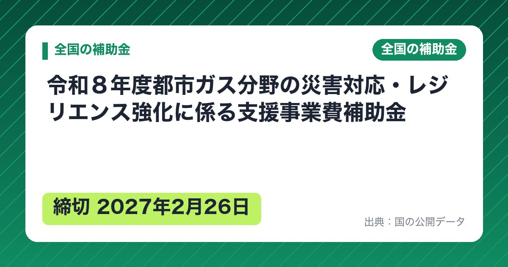

令和８年度都市ガス分野の災害対応・レジリエンス強化に係る支援事業費補助金

締切 2027年2月26日｜上限 1.305億円
都市ガス分野の災害対応・レジリエンス強化を目的に、中小の一般ガス導管事業者に、ガバナ遠隔監視システム導入を支援します。
概要
| 対象地域 | 全国 |
|---|---|
| 補助上限額 | 1.305億円 |
| 補助率 | 【ガバナ遠隔監視システム】１／２（補助額上限、補助率の詳細は公募説明会資料を参照ください） |
| 受付期間 | 2026年10月7日 〜 2027年2月26日 |
| 対象の従業員数 | 300名以下 |
| 利用目的 | 災害（自然災害、感染症等）支援がほしい / 安全・防災対策支援がほしい |
| 対象業種 | 電気・ガス・熱供給・水道業 |
| 実施機関 | 令和８年度都市ガス分野の災害対応・レジリエンス強化にかかる支援事業費補助金 |
公募の内容（原文の抜粋）
■公募説明会について
下記の日程で、オンライン（Zoom）による公募説明会を実施いたします。
参加を希望される方は、都市ガス振興センターHPより事前登録ください。
（開催日時）
・10月13日（火）14：30～16：30
■jGrantsの動作環境について
jGrantsの動作環境は以下のとおりです。下記のブラウザの最新バージョンをご利用ください。
なお、下記以外のブラウザ（InternetExplorer等）は、
申請上のエラー等が生じますので利用しないでください。
Windows ：Chrome, Firefox, Edge（※）
MacOS ：Chrome, Firefox, Safari
Android ：Chrome
（※ Edgeの「InternetExplorerモード」は申請上のエラー等が生じますので利用しないでください。）
■jGrantsを利用できない場合の申請方法について
やむを得ない理由によりjGrantsを利用できない場合は、必ず申請前にセンターまでご連絡ください。
センターが認めた場合に限り、電子メールでの申請することを可とします。
--------------------------------------------------------------------------------
■目的・概要
一般ガス導管事業者のうち中小企業者が、災害時復旧作業等の迅速化に資する機器や設備（ガバナ遠隔監視システム）の導入を行うために要する経費に補助金を交付します。
■交付対象要件
（１）一般ガス導管事業者のうち中小企業者
（私営事業者にあっては資本金３億円以下または従業員３００人以下。
公営事業者にあっては従業員３００人以下。みなし大企業除く）
（２）ガス事業法に定める災害時連携計画の効果を高め、災害時の二次災害の防止と
復旧作業等の迅速化に資する機器あるいは設備のうち、以下設備の導入であること。
ガバナ遠隔監視システム
ガバナの遠隔監視により災害時にガスを供給すべき範囲の特定や遠隔で供給停止を停
電時にも行うことができる設備であって、（ア）、（イ）の少なくとも一つの機能を
有するもの
（ア）ガバナのガスの圧力、漏洩、地震のＳＩ値等からガバナを遠隔監視する機能
（イ）ガバナを自動又は遠隔で制御（開又は閉いずれかの場合を含む）できる機能
（３）ガバナ遠隔監視システムについては新規導入を対象とし、既存システムの同スペックでの単なる入れ替えによる更新は対象外とする。ただし既存システムの拡大・機能拡充、及びＬＴＥ等最新の通信方式への更新については対象とする。（ＦＯＭＡ等通信の停波等に伴うＬＴＥ等の通信規格への切替）
（４）センターが補助事業者に交付決定を行った年月日以降の契約であること
詳細は公募説明会資料をご参照ください。
■問合せ先
＜事業全般に関するお問合せ先＞
一般社団法人 都市ガス振興センター 保安対策支援グループ
ＴＥＬ：０３－６４３５－７６９３
https://www.gasproc.or.jp/
GビズIDの取得・お問合せは以下をご参照ください。
https://gbiz-id.go.jp/top/
申請前の準備
- GビズIDプライム（電子申請に必須・無料・発行まで1〜2週間かかることあり）：gbiz-id.go.jp
- 直近の決算書（個人事業主は確定申告書の控え）
- 事業計画（何に使い、どう売上・生産性が上がるか）
- 見積書（買う物・頼む工事の）
ほとんどの補助金は、申請時に直近の決算書（個人は確定申告書）が必要で、交付後も経費の帳簿が求められます。
広告準備に使えるサービス：
・無料の会計自動化ソフト マネーフォワード クラウド会計  （法人の帳簿・決算書づくりを自動化）
（法人の帳簿・決算書づくりを自動化）
・やよいの青色申告オンライン  （個人事業主の青色申告に）
（個人事業主の青色申告に）
全国のほかの補助金
- 「太陽光発電導入拡大等技術開発事業」の第3回公募（締切 2026年11月25日）
- 【農林水産省】中山間地域所得確保推進事業（締切 2026年11月25日）
- 「ポスト5G情報通信システム基盤強化研究開発事業（社会課題解決に向けた量子コンピュータ次世代機開発・実証の加速）」（g12-2：部素材）の追加公募（締切 2026年11月26日）
- 【事前着手】令和8年度排出削減が困難な産業におけるエネルギー・製造プロセス転換支援事業（二次公募）（事業Ⅱ/紙パルプ・化学・セメント）（締切 2026年11月27日）
- 令和8年度排出削減が困難な産業におけるエネルギー・製造プロセス転換支援事業（二次公募）（事業Ⅱ/紙パルプ・化学・セメント）（締切 2026年11月27日）
- 令和７年度補正 ディマンドリスポンスの拡大に向けたIoT化推進事業（締切 2026年11月27日）
- 【令和８年度】二酸化炭素排出抑制対策事業費等補助金（地域再エネ水素ステーション保守点検等支援事業）（締切 2026年11月28日）
- 令和８年度二酸化炭素排出抑制対策事業費等補助金（運輸部門等の脱炭素化に向けた先進的システム社会実装促進事業のうち、農業機械の電動化促進事業）（締切 2026年11月30日）